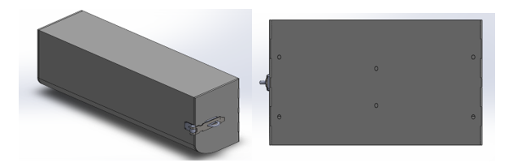
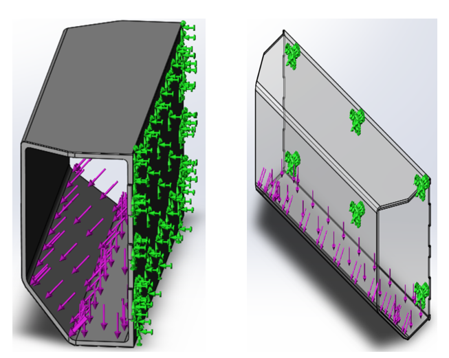
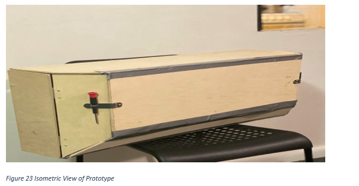

DSNY Project
by
Anil Ghimire, Asif H Sharkar, Manjeet Chapagai, Rajendra Basnet, Zhixin Deng
Introduction of the Problem and Motivation
The New York City Department of Sanitation (DSNY) is the largest sanitation department in the world. They are primarily responsible for garbage collection, recycling collection, street cleaning and snow removal. On an average day, DSNY collects more than 10500 tons of garbage from residential and institutional properties, and also clears out litter, snow and ice throughout the city which can rack up to 6000 miles of road coverage. Most of these operations are done with the help of DSNY’s massive collector truck fleet, which is approximately 2230 trucks. One of most widely used collector truck from DSNY is the Mack LR Low Entry Cab Dual Steering which is custom made for the department.
Mack LR Low Entry Cabin Dual Steering

The Mack LR Model puts the driver’s needs first with upgraded features designed for more comfort and increased productivity. Keeping in mind the rigorous duty cycles that operators goes through daily, Mack increased comfort and productivity with stand-up and seated positions. The Mack LR model is spec’d with a Mack MP7 11-liter diesel engine with 325 to 345 horsepower and torque ratings from 1,200 to 1,280 lb.-ft. The Cummins Westport ISL G natural gas engine is the alternative option to diesel. All LR models are is equipped with an Allison RDS five-speed or six-speed automatic transmission. The interior of the truck exhibits the dual steering and the control panel in the middle for the operators. It also includes Storage pockets, 2-liter-bottle holders and a central platform behind the main control panel.
Project Description
The Project requires the students to design a storage compartment for the drivers which is to be secured permanently to the truck’s cabin. The dimensions provided from DSNY are a guideline and can be changed depending on the space available and trying to use the space to fit at least a common backpack. The specific model of truck which is to be used is the Mack LR Low Entry Cab Dual Steering. The motivation for the students is to design the storage bin in such a way so that it adds security and daily convenience during the operator’s duty cycle.
Background/ Literature Research
Background Research
As the first step of the project, research was conducted for benchmark on sizes of standard backpack from popular backpack companies like Samsonite, north face etc. as listed on Table 1. Listing the standard sizes for all the companies, the average backpack sizes were determined to be 18”X13”X8” which is shown in the table below. Similar research was conducted for the sizes of lunch box and the average size was determined to be 8”X4”X6” as shown in Table 2.
Table 1 : Benchmark on backpack sizes
| S.N | Company | Dimensions(inches) |
|---|---|---|
| 1 | Samsonite | 16X11.5X7 |
| 2 | North face | 20X13.25X10.5 |
| 3 | Swiss Gear | 18X13X8.5 |
| 4 | Targus | 18.25X14X8.5 |
| 5 | Jansport | 16.7X13X8.5 |
| 6 | Converse Chuck | 18X12X5 |
| 7 | Eddie Bauer | 19X12X9 |
| 8 | Herschel Heritage | 18X12.25X5.5 |
| Average | 18X13X8 |
For the better picture, research was conducted on how other trucks are equipped with the storage cabin. But the case is slightly different because trucks of Sanitation Department have dual steering and is custom made for the department. Every decision made was based on research, that goes for door types, lock types, hinges size and every other detail that could be thought, because safety is the most important concern. For the door types, sliding doors, folding doors, garage type doors, cabinet type doors were all taken into consideration for the design. Likewise, research was conducted on the available lock types for all the door types. Some possible lock type includes padlock, deadbolts, knob locks, cam locks and lever handle lock.

Site Visit #1
Steps Taken
- Site visit #1
- Comments from DSNY’s Personnel
- Decision of Location
- Required Measurements of Truck’s interior
- Design Constraints
Before the first Site visit, some research was conducted on the backpack sizes and the lunch box sizes. However, major area of the research was conducted on analyzing the interior of different collector’s truck. This was to get an idea of any available space inside the truck for the placement of storage box. The first site visit was mainly focused on meeting with the DSNY personnel. First, there was brief exploration of the Department of Sanitation itself and then the exploration of the DSNY’s collector trucks on which the storage box was intended to be placed. DSNY’s senior engineers, mechanics, technicians and the truck’s operator were interviewed. The very first step in the Site visit was to determine the location for the placement of the storage box. Finding the space was hard for the storage box upon exploring the truck as the interior of the truck was compact, with control panel in the middle, the dual steering and dual driver’s seat. The only available space was in the back panel, i.e. where already exists the compartment for placing the personal belongings of truck’s operator. The idea was to remove the existing compartment and to place the designed storage box in that same exact location. Once the location was decided the next step was to take all the possible dimensions. The overall length between 2 drivers was 40 inches and the overall height was 16 inches from the top to the location of control panel. The existed compartment itself was 28 inches long 13 inch in height and has maximum front extrusion of 4 inches. During the visit, the sponsor set some of the things to be considered for the box and things to take into consideration while installing the box.
Design Constraints:
- Cost Efficient: The box to be designed should be cost efficient. It is obvious that the cost matters and Sponsor are often lured with cost efficient products. In the real field, safety and durability do plays an important role but for any business cost can never be ignored. The estimated cost of the storage box should be such that the Sponsor could compete with the Truck’s manufacturing company Volvo.
- Safety: The box will be placed at the head level between two drivers. So, the location and dimension of the storage box should be such that it is safe to the drivers in their working environment. The material should be decided in such a way that it would not cause major injuries to the drivers during operation or impacts.
- Ergonomic Design: The design itself should be such that the placement of the box in the compact truck’s interior should not hamper the driver’s ease in the working environment.
- Positioning of the box: The placement of the box in no way should block the driver’s view. The distance from the back wall to the control panel was 12 inches. But, using 12 inches of full extrusion would block the driver’s view. So, maximum front extrusion the box could be was 8 inches. The location of the radio transmitter, which is positioned just below the existing compartment, cannot be changed at any cost. So, a clearance is to be considered for the transmitter. The clearance should be such that the radio transmitter could be removed and installed easily when required. The requirement of that clearance won’t allow the complete use of the available height. The coffee cup holder, control panel and the box itself should easily be accessible to the drivers even when the truck is in operation. The lock should easily be accessible to the drivers and the positioning should be such that it would avoid most of the sharp edges facing towards the driver.
Designs
Design Concepts
A total of 5 concept designs were created in SOLIDWORKS for exhibition. The motive was to make improvements as moved along the concept designs, to make sure that the ideal model was created. A design attribute chart was formed to rate the designs for different kinds of qualities, which would help for choosing an ideal model. The descriptions and evolutions of all the models are shown below.
Model 1
Dimension: 20” x 12” x 8”
Description:
The first design is proposed by DSNY. The requirement was to design the storage box with overall dimension of 20’’ 13’’ 8’’. Their objective for the proposed design is to fit the backpack of the driver. They also wanted the drivers to use their own key, so the best option as discussed was padlock. As you can see, it is very simple design which will only fit a backpack. They want it to replace the existing compartment exactly to the same fixtures which is 28’’ 13’’. The thing is it might prove costly, since it needs extra structural support. If the compartment were to be replaced it with the proposed design, some of the space will be useless because of smaller size. Further, proposed design has a major restriction which impedes the use of transmitter. There is not enough clearance for the user to install/uninstall the transmitter. The clearance distance is at least 4 inches, but it will give us only 3 inches. One major restriction and the proposed design fails.
Note: Model 1 doesn’t comply with the dimensions needed for the positioning of the bolts, thus a truss system might be required for the support of Model 1.Door Type: Single Hinged Door
Lock Type: Padlock
Model 2
Dimension: 28” x 13” x 8”
Description:
This model was designed based on the existing compartment inside the driver cabin. The Model 2 has the same height and width as the compartment. This model includes a curve feature on the lower front edge (Figure 6) which will give extra clearance for an easier installation/removal of the radio transmitter which is placed underneath it. The back of this model also contains the holes positioned for placing the bolts/screws of the existing compartment. This is to ensure that this model can be replaced with the existing compartment with ease.
Note: : The positions of the holes are not accurate, thus an engineering drawing of the existing compartment inside the truck is needed.Door Type: Single Hinged Door
Model 3
Dimension: 30” x 12” x 8”
Description:
This model was designed in a trapezoidal shape with folding doors and can fit perfectly in the same place as the compartment. Model 3 has the same height and width of the existing compartment. The angled door gives a driver more clearance for the view of the side mirror. The back of this model also has holes positioned for placing the bolts/screws of the existing compartment. So, the folding door was introduced as it takes less space to operate. The trapezoidal shape of the model gives extra clearance for an easier installation/removal of the radio transmitter which is usually placed underneath.
Door Type: Folding Door
Model 4
Dimension: 28” x 15” x 8”
Description:
This model has the top part curved shaped to fit exactly in the curvature of the truck interior. It is designed with single hinged curved door. This shape of the box will look more natural as it perfectly fits onto the curve. Model 4 has the same width of the existing compartment but with different height to fit in the curve. The back of this model also contains the holes positioned for placing the bolts/screws of the existing compartment. This is to ensure that this model can be replaced with the existing compartment with ease like previous 2 models. Also, the curved shape of the model gives extra clearance for an easier installation/removal of the radio transmitter which is usually placed underneath.
Door Type: Single Hinged Door with curvature to fit the shape of the box
Model 5
Dimension: 28” x 15” x 8”
Description:
This is the new model that is designed in a trapezoidal shape with folding doors and can fit perfectly in the same place as the compartment. This model has the same height and width of the existing compartment and the back of this model also contains the holes positioned for placing the bolts/screws of the existing compartment. Model 5 has the advantage over Model 3 i.e. less angled and looks more appealing. So, the folding door was introduced as it takes less space to operate. The trapezoidal shape and curved at the base of the model give extra clearance for an easier installation/removal of the radio transmitter which is usually placed underneath.
Door Type: Folding Door
Note : All the models can be fitted with the back wall containing the holes for the bolts/screws which are already in place for the existing compartment. For modelling the back of every design into the same fixture, 3D model and engineering drawings of the compartment is required that exists already. Exact locations of the bolts/screws can be placed into the design. As mentioned earlier, Model 1 doesn’t comply with the dimensions for the positioning of the bolts, thus a truss system is needed for the extra support system of the compartment. Dividers can be added inside the compartment for the usage of both the drivers, but with the space available, it is only possible for one driver to have large enough space for an average backpack and the second driver will have space enough for a lunchbox. Dividers can’t be installed in Model 1 because the dimensions are just enough for an average backpack according to our calculations. Furthermore, a garage door type can be designed for making use of the space more efficiently.
Rating
Details will be added later
Finite Element Analysis
Finite Element Analysis
The location for the placement of the storage box was decided, all the required dimensions were taken, different solid modeling was made and the winner model was chosen based on the Design Attribute Chart. The next step was to give the validity to the winner solid model before moving forward and manufacturing. One of the methods to give validity to the solid model is by running the simulation using Finite Element Method. The several simulations using FEM were run to obtain convergence test and sensitivity test which are the common basics to give validity to any solid model. The Finite Element Analysis was broken into four major steps; determining the required boundary conditions, applying the reasonable loading conditions, conducting convergence and sensitivity test to each case.
FEM itself was sub-divided into four cases
- Case 1: On the Box itself
- Case 2: On hanging box
- Case 3: Force applied on the front face
- Case 4: Force applied on the door
The very first step was deciding the required boundary conditions. Since box will be hanging on the wall with help of screws it was hypothesized that holes are the places to experience maximum stress during loading. For case 1, the entire back was fixed as shown in figure 19a. However, for case 2 only the hole for the screws were fixed as the box will be hanging on the wall with the help of screws as shown in figure 19b.
In both the cases 1 and 2, the loading conditions were same also as shown in figure 19a and 19b respectively. The box was to hold the bag either its hanging or is placed by the box itself. So, the similar loading conditions were applied. Transverse load was applied in each case to observe how the box behaves on loading.
The main objective of running the simulation in FEM was to get an idea of location and value of the maximum stress. The location of maximum stress for Case 1 was at the joint between the fixed back wall and the bottom face of the box whereas the location of maximum stress for case 2 was near the holes for screws. The stress plot for case 1 and case 2 is as shown in the following picture.
Cases 3 and 4 were the further case studies to observe other scenarios. Case 3 was when the hanging box is subjected to the external force on the front face of the loaded box as shown in figure 21a. Since, the box will still be hanging, the fixed restraint will only be on the holes as in case 2. Fourth case was to see how the door behaves when subjected to external loading. For this, the back of the door was fixed, the force was applied at the edge of the door and hinged fixture was applied in the middle since the door was folding type of door. Figure for case 4 is as shown in figure 21b.
The location of maximum stress for Case 3 was at the face opposite of where the external force was applied whereas the location of maximum stress for case 4 was at the edge of the face of the door which is opposite of where the external force was applied. The stress plot for case 3 and case 4 is as shown in figure 21a and 21b respectively.
The required stress plot obtained for each case will be analyzed in detail in the result and discussion section.
The simulation was run in each case to observe the location and value of maximum stress and obtain the convergence test. When first simulation was run, the convergence was not obtained. So, the joint of the back of the box fixed on the wall and the bottom face of the box shown in figure 22 was filleted. Finally, convergence was obtained. This filleted region is also the location for applying control Mesh for case 1. The radius of the fillet will be changed further to observe how the maximum stress behaves with the change in the radius of the fillet. This process is also called as the sensitivity test.
Site Visit #2
Presentation of Alpha Prototype in Site Visit#2
After FEM and validation of the model, the -prototype of winner model was created with the available resources (wood) in the manufacturing lab. This prototype made is of on 1:1 scale. It has folding door on either side of drivers to give more clearance between the storage box and a driver while opening and closing the door. The lower curve feature also gives more clearance to transmitter and coffee cup underneath the storage box. Although the alpha prototype exhibits sharp edges and poor finishing, the actual model will have filleted surfaces all throughout the body.
During the second site visit, the team presented the alpha prototype to the Senior Automotive Specialist in DSNY. College backpack was tried, and it fitted well inside the box leaving some space which could be used for lunchbox too. The possible improvements or changes that can be made in the future for better design were discussed. The major concern for the them was the position of pad lock. The hatch on the side is a risk factor to drivers in extreme situation such as accident. Drivers might hit head which might cause serious injuries to head. They suggested not to include any metal on the storage box to avoid thermal expansion on long run. Moreover, suggestions were also made to equally divide the storage for two drivers so that it will be fair for both. Overall, the meeting was successful, senior automotive specialist liked the design and gave us the green light to proceed.
Manufacturing
Manufacturing Process
Now that the material is chosen, the next step is to find the best procedure to manufacturing. Some of the process to manufacture plastic were compared with each other based on cost as shown in Table 11.
Table 11 : Manufacturing Processes
| Manufacturing Process | Setup cost | Per part Cost | Total cost |
| 3D Printing | $ | $$$$ | $$$$$ |
| CNC machining | $$ | $$$$ | $$$$$$ |
| Vacuum forming | $$$$ | $$$ | $$$$$$$ |
| Injection molding | $$$$ | $ | $$$$$ |
| Extrusion | $$$$ | $$ | $$$$$$ |
| Blow molding | $$$$ | $ | $$$$$ |
On comparing different process, 3D printing, Injection molding and blow molding have similar cost for the total cost. All other processes were ruled out as they come out to be expensive. 3D printing is generally slower and are more labor intensive. Extrusion molding are most used for manufacturing plastics with hollow inside like bottles. Though blow molding and injection molding have similar final cost and are feasible for manufacturing, injection molding produces high quality parts and cost can be lowered down for mass production. Consulting with some of the manufacturers and based on research, Injection molding was determined the best process for manufacturing the storage bin. Molds for the injection molding are complex and are to be manufactured for high tolerance and high-quality parts. They can be used to produce complex parts and certain geometries might increase cost significantly. The cost might seem high during the beginning and might seem slow, but this method has no match for mass production. Once the tooling is u, cycle times only takes few seconds and millions of high-quality parts can be produced at the fraction of cost compared to other processes. Because of the flexibility in shape and size achieved, injection molding has been consistently widened the boundaries of design. Injection molding does provide flexibility in shape and size of the material to be produced.
Injection molding is a manufacturing process where the parts are produced by injecting molten material into the mold. This process is suitable for mass production of identical parts as the stocks are molded into molten material and are injected to make the desirable part. Because of the flexibility in shape and size achieved, injection molding has been consistently widened the boundaries of design. Injection molding does provide flexibility in shape and size of the material to be produced.
Cost Analysis
Table 12 : Cost Analysis
Improvement
Future Work
The reviewed response from the sponsor came in at the end part of the school semester, and thus the student group working on the project has requested for an extension. The members are already working on new design concepts where the storage bin would be an add-on to the existing compartment. The members are currently working on creating a 3D model for the existing compartment. The group expects to create an approximate solid model as an engineering drawing is needed from the truck’s manufacturer for an ideal one.
One of the design concepts that is currently being discussed with the supervisor is a storage bin made from fabric. The flexible fabric will have zippers installed in it which can be secured with a lock and an ABS plastic back panel in between the fabric, that will be bolted to the back wall of the truck’s interior for support. The group faces a challenge with the design as the whole storage would wobble while vehicle is in motion and lean down when weight is introduced. Some of the solutions that are being worked on are highlighted below.
-
Tension Cables
Cables attached to the back of the interior can be hooked to the top of the fabric storage. This would add support to the design and reduce the vibration. -
Small extrusion of ABS plastic support inside the fabric
A small extrusion of plastic base, hidden inside the fabric can help with the bearing of load and leaning down situation. Although, keeping in mind that the previous constraints prohibit the overall extrusion to be more than 8 inches, while the existing compartment is extruded roughly around 4.5 inches. -
Origami like top and base
Conclusion
The price is determined to be $60.32 for each storage bin. The price is expected to go down by 15-20% with the help of negotiation and using one manufacturing company for all the components. While economic feasibility plays a vital role for decision making in the industry, it was made sure throughout the project that higher priorities were given for an ergonomic design and most importantly, safety. Decisions were made solely based on research findings and consulting with Dr Sadegh. The 3D model was validated by the FEM results, which shows that the design experiences less than ten percent of the tensile stress of ABS plastic. The members working on the project believes that the design satisfies the customer needs, both the requirements and the constrains, and is ready to be mass manufactured.